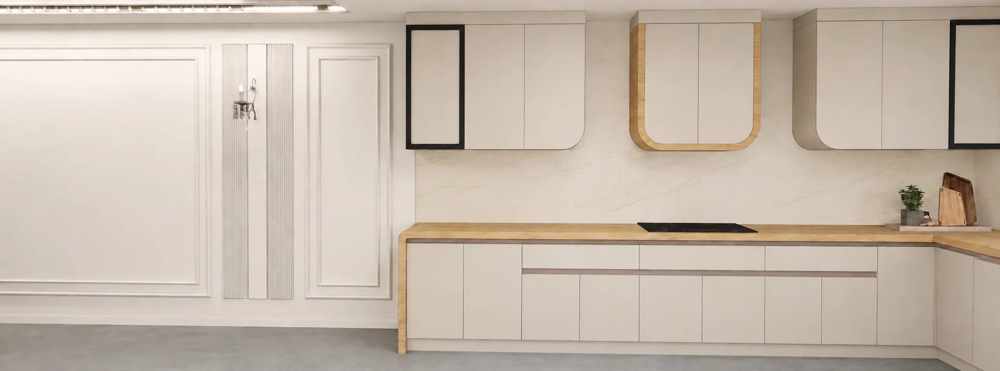
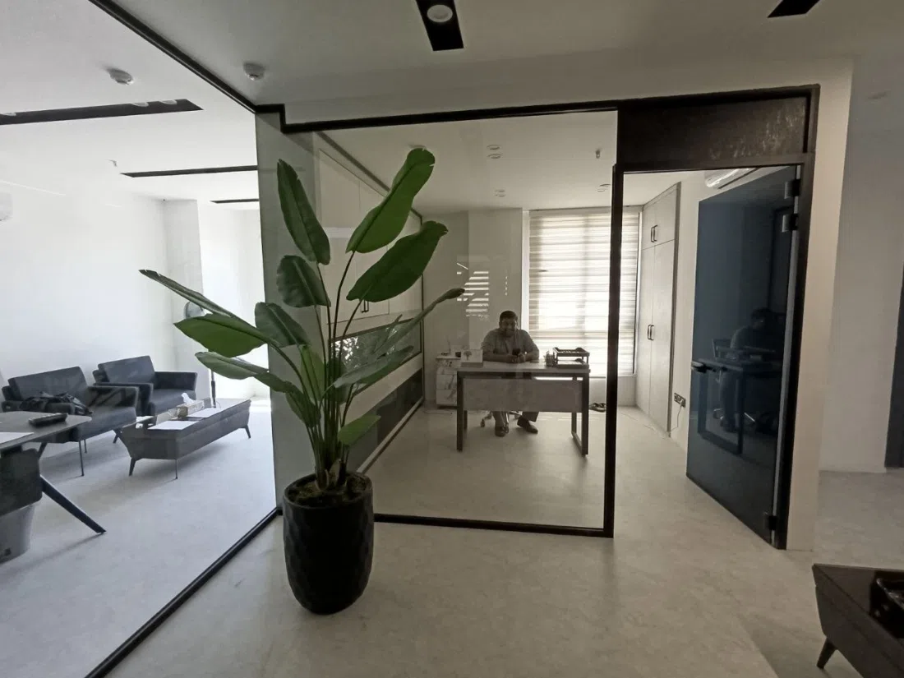
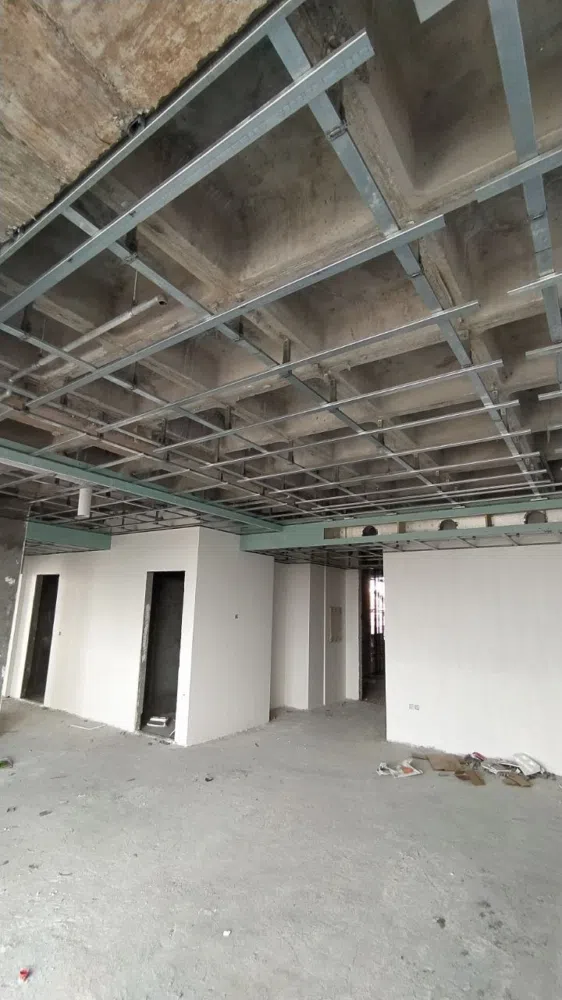

بازسازی و اجرای کامل
مدیریت یکپارچه زیرسازی، تأسیسات، کناف و تکمیل فضا تا تحویل نهایی. ساختار این صفحه برای اضافهشدن بخشهای اجرایی جدید آماده است.
 DRYWALL & CEILINGکناف۴ مجموعه · ۶۱ تصویرمشاهده اجراها ←
DRYWALL & CEILINGکناف۴ مجموعه · ۶۱ تصویرمشاهده اجراها ←
BATHROOMسرویس بهداشتیآماده دریافت تصاویرورود به بخش ←
ROOF GARDENروفگاردنآماده دریافت تصاویرورود به بخش ←
PARKINGپارکینگآماده دریافت تصاویرورود به بخش ←